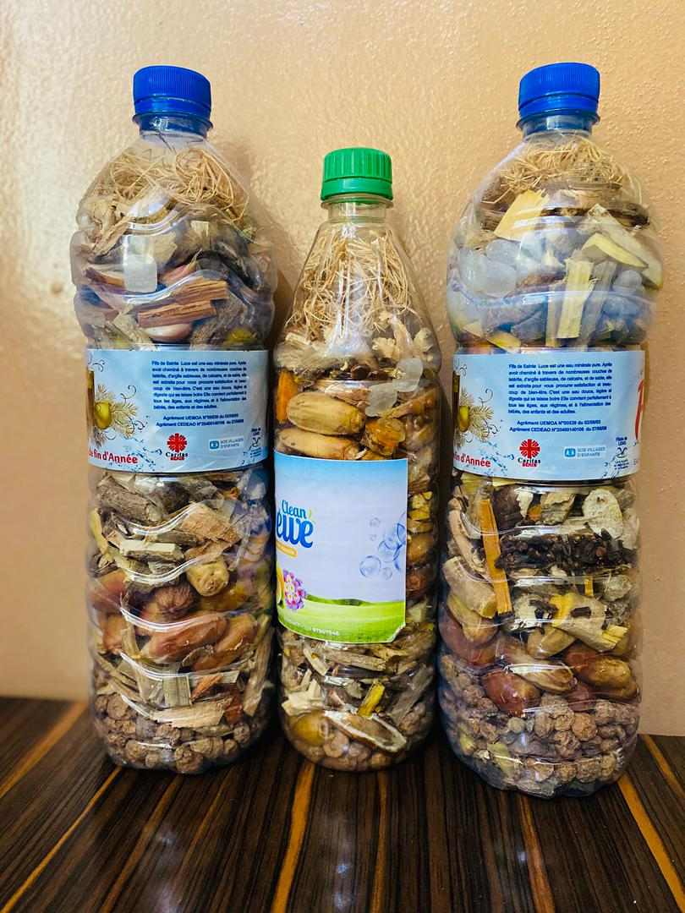
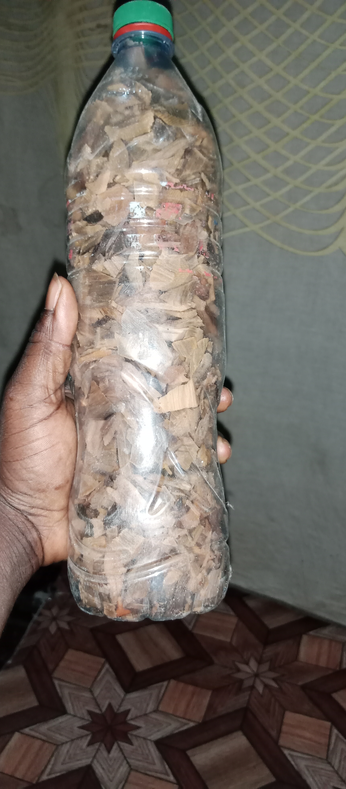

Guérisseur Traditionnel du Bénin
Découvrez les pratiques et services traditionnels proposés par Dah Kpanlinguan Gbekpo à Sakété, au Bénin.
Contacter sur WhatsAppDah Kpanlinguan Gbekpo est un praticien traditionnel basé à Sakété, au Bénin. Il propose un accompagnement traditionnel dans le respect des pratiques et de la culture béninoise.
Consultation et écoute pour comprendre vos besoins et vous orienter vers l'accompagnement adapté.
Préparations traditionnelles à base de plantes, proposées dans le cadre d'un accompagnement traditionnel.
Accompagnement traditionnel destiné aux personnes souhaitant améliorer leur vitalité et leur bien-être sexuel.
Accompagnement traditionnel pour les problèmes d'hémorroïdes internes et externes.
Accompagnement spirituel et traditionnel.
Pratiques traditionnelles de désenvoûtement.
Accompagnement traditionnel dans les questions liées aux relations affectives.
Conseils et accompagnement spirituel traditionnel.
« Un accueil respectueux et une écoute attentive. »
— Client

« Une approche traditionnelle avec beaucoup de respect. »
— Client📍 Sakété, Bénin
📧 dahkpanlinguangbekpo@gmail.com
🕐 Disponible 24h/24
💬 Écrire sur WhatsApp 📧 Écrire par e-mail